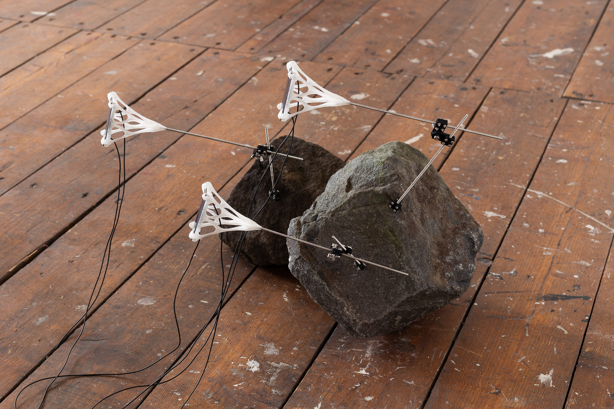

Electrostatic Pollen
2023
Solar cells, PLA, steel, epoxy, stones, microcontroller, copper cables, battery
Dimensions variable
Electrostatic Pollen reproduces, or does something like it. Powered by solar cells, a radio transmitter continuously broadcasts the complete genomic sequence of Prunus persica - a peach tree. This process of transmission will carry on indefinitely, as long as the electronics are intact.
Walk through the forest on a bright summer day, and you will find yourself steeped in shadows. The plants there are in a delicate yet fatal competition, an unending battle for access to energy. Those that find it will remain, and those that do not will perish in the dark.
These organisms are chemical refineries. They produce tall trunks and spread their leaves over vast areas for a single purpose - to turn lights into usable energy. And if luck would have it, they may save up enough of this energy to create the seeds of their next generation.
This way of being is totally foreign to us. We have different senses, different mechanisms, even different cells. We live over different spans of time and fight the battle of existence in totally different ways. Yet somehow we can empathize with their struggle, and we often find beauty in their approach.
What, then, is the essence of a living thing? Is it what it is made of? The form it takes? Or maybe the function it performs? If we follow the path of complexity down from an animal to an atom, where do we draw the line between living and dead?
Electrostatic Pollen is a sort of totally artificial plant, a system that converts energy from the sun into the proliferation of genes. It is a surrogate host for the genetic material of the common peach tree - Prunus persica. The data of this tree’s nucleotide (DNA) sequence is encoded to a binary stream before being repeated by a radio at 433 MHz. Limited in its transmission rate, the system sends a full copy only once each year. As an electromagnetic wave, the tree’s genetic code travels into the atmosphere and theoretically beyond, stored indefinitely as a transmission in the void of space.
The system runs via a RFM69HCW transceiver module, a microprocessor, solar cells, and a lithium-ion battery to smooth out power delivery. The antenna design is influenced by genetic optimization performed in 4nec2. The genome sequence of Prunus persica was obtained from the The International Peach Genome Initiative [1] via genomevolution.org.
[1] The International Peach Genome Initiative (2013). The high-quality draft genome of peach (Prunus persica) identifies unique patterns of genetic diversity, domestication and genome evolution. Nat Genet 45, 487-494 (2013) doi:10.1038/ng.2586

